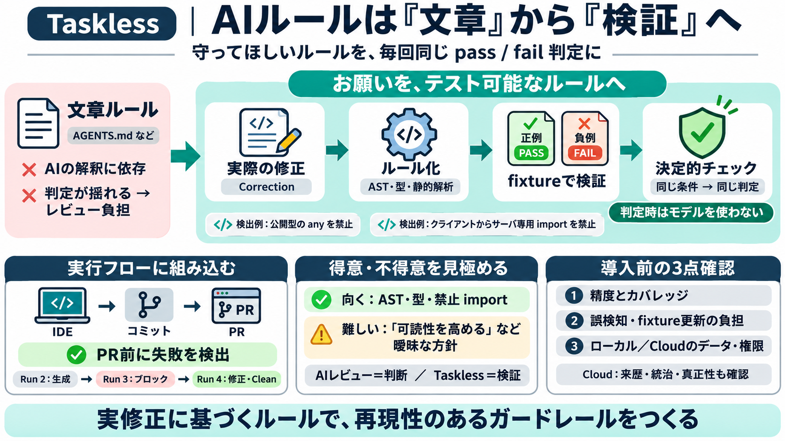

Taskless · GitHub
Markdown instructions like `AGENTS.md`, `skills/`, and `.cursor/rules` are injected into prompts and followed inconsiste…

Markdown instructions like `AGENTS.md`, `skills/`, and `.cursor/rules` are injected into prompts and followed inconsiste…
Taskless turns the corrections you give your coding agent into rules that run on every change. Correct once. Enforced fo…
## Markdown Rules Don’t Work `AGENTS.md`, `skills/`, `.cursor/rules`. They all inject markdown into the AI’s prompt and…
``` # Install dependencies # # Validate all skills ## Build AGENTS.md for all skills # # Create distribution packages # …
20, 2026`,tags:[`Tools`],rss:{title:`ast-grep language support | Tools`,description:`CodeRabbit now runs ast-grep 0.43.0…